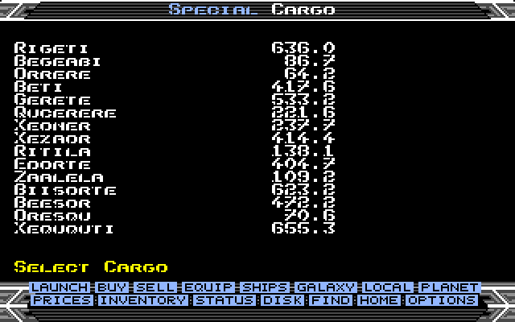
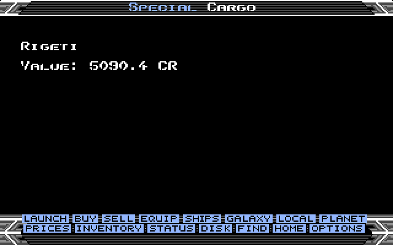
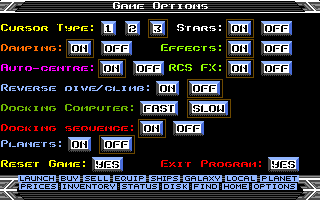

Your first departure
Return to top △Choose a new commander or load an existing save. Use the station buttons to trade, equip your ship and plan a route before selecting Launch. The default Adder has a limited hold and one missile: check Spare on Status before buying goods.
On the charts, select a system within your current fuel range and use H in flight to begin the jump. After arrival, use the compass and scanner to find the station. A local jump with J speeds up a clear passage but is interrupted by nearby traffic.
Keyboard, mouse and joystick
Return to top △| Control | Action |
|---|---|
| < / >, left / right arrows | Roll left / right. |
| S / X, up / down arrows | Dive / climb with Reverse dive/climb OFF. |
| Space / / | Increase / decrease speed. |
| A | Fire the laser. Atari ST also accepts either Shift key. |
| I | Identify the object in the sights. A hollow green square marks a pending request. |
| T / M / U | Arm and seek a missile target / fire a locked missile / unarm and cancel pending identification. |
| E / Tab | Activate ECM / use an Energy Bomb, when fitted. |
| C | Engage or disengage the fitted docking computer. |
| H / G, then H | Normal hyperspace / confirm a galactic hyperspace jump, with the required equipment. |
| J | Local jump drive, when the surrounding area is clear. |
| R / Q | Fire fitted retro rockets / use the fitted escape capsule. |
| Y / L | Toggle the Cloaking Device / ECM Jammer, when acquired. |
| N / Z | Switch the compass between planet/station and star / change scanner magnification. |
| 1–4 or F1–F4 | Docked: Launch, Buy, Sell, Equip. In flight: front, rear, left and right views. |
| 5–9, 0 (or corresponding function keys) | Galactic chart, local chart, planet data, prices, Status and Inventory. |
| F / B / D | Find a system / centre the chart on the current system / display distance. |
| W | Select the Special Cargo destination on either chart. Elsewhere it only beeps. |
| V | Show game information in a 3D view. On UI pages it only beeps. |
| Ctrl + F10 | Amiga: exit to AmigaDOS / Workbench. |
| - / = / P | Disk menu / Game Options / pause. |
Mouse and joystick steering are also available. With Reverse dive/climb OFF, moving the mouse up dives and moving it down climbs. Holding both opposing roll or pitch directions centres that axis immediately, whatever their press order; releasing one resumes steering with the other. This also works with arrow keys and mixed keyboard/joystick input.
Click the bottom icons to change screens. Ships opens Shipyards. Equipment, offers and confirmations are selected with the mouse; Yes/No prompts also accept Y, N and Escape.
Status and cargo space
Return to top △
Equipment is the space occupied by installed devices and mounted lasers. Spare is the hold space left after equipment and cargo. Each mounted laser and ordinary installed device occupies 1 t; missiles and cargo expansion do not use hold space. A Special Cargo contract appears below Cash with its destination and current value.
The registration identifies your hull in ship identification and radio messages. Buying a new ship assigns a new ID.
Buying a different ship
Return to top △
Single-click a hull to select it and display its name. Double-click it, or click Ships again, to buy. The price shown is the full hull price; the bottom line shows your present ship’s trade-in value.
Before changing hulls, sell ordinary equipment, cargo expansion and all mounted lasers. Cargo, missiles and transferable mission devices must fit the replacement ship. A successful exchange gives 60% of the old hull’s price, charges for the new hull, fills its fuel tank and assigns a fresh registration. It does not automatically install ordinary equipment.
Sidewinder, Krait and Mamba offers are restricted to Anarchy systems. See the hull table for capacities and prices.
Buying and selling equipment
Return to top △Click the blue Buy or Sell heading on Equip to switch modes. Selling lists fitted items even when the station could not normally sell them. Equipment resale returns 50% of its price. When selling a laser, choose the mount to remove; other mounts remain fitted.
A replacement laser refunds half the old laser’s price. Unique mission rewards cannot be sold. Cargo expansion cannot be removed when your remaining cargo and devices would no longer fit. Equipment prices depend on the hull’s equipment category.
Weapons, shields and identification
Return to top △The active view uses the laser on that mount. Pulse, Beam, Mining and Military lasers differ in strength and cadence. Beam and Military fire continuous beams; AI ships use the same distinction, including short uninterrupted bursts.
Front and rear shields protect separate sides. Damage reaches the energy banks when the struck shield is exhausted. Recovery and resistances depend on the ship and installed Energy Unit. Player and AI versions of the same purchasable hull use the same defensive statistics. AI ships currently have no Energy Unit.
Press I for identification. Its pending green square takes priority over the light grey square used while a missile is armed but has no target. U cancels both pending identification and missile arming.
The missile display has at most four squares. A hull with fewer pylons shows fewer squares; a larger magazine displays the loaded count clipped to four until fewer than four missiles remain. The actual capacity is unchanged.
A shield hit briefly lights an AI ship blue; Thargoids and Tharglets flash orange. The effect also applies to the distant grey sphere, but not to a dot or cross. Guided missiles can damage a ship without destroying it in one hit.
Jettisoning cargo
Return to top △In flight, open Inventory and double-click a commodity. Confirm Yes to eject up to 1 t, or the whole remaining amount when smaller. Kilogram and gram cargo can also be ejected. The canister retains its exact commodity and mass for later scooping.
Jettisoning cargo near a station is not permitted everywhere. With your Cloaking Device active, cargo ejection brings no legal penalty or station warning. Story cargo and Special Cargo cannot be discarded this way.
Special Cargo deliveries
Return to top △
- Open Buy and click its blue heading to enter Special.
- With no active contract, click a destination to pay the listed entry fee and accept the delivery. You can carry one contract at a time.
- The details page shows the destination and current reward. Reopening Special shows the same contract; it does not charge you again.
- On either chart, press W to select the destination. It does not change the target during a hyperspace countdown.
- Dock at that system to receive the reward automatically.

Docking at another system halves the remaining reward. Ordinary jumps without docking do not reduce it. A completed galactic jump cancels the contract. Special Cargo takes no normal hold space, survives a ship purchase and is saved with the commander.
Cargo Delivered appears briefly after a successful delivery. A navigation key or bottom-menu click dismisses it early. Any pending story-mission dialogue is handled before the requested screen opens.
With no contract, W on a chart shows Docked! only at a station; in flight it beeps. It does not pause the game.
Approach and docking
Return to top △When you approach close enough to a human station inside the S zone, it sends a docking clearance or denial. Listen for its response before attempting to enter.
In stricter governments, an Offender or Fugitive may receive a less welcoming clearance. A hostile greeting is still permission to dock. Scrambled IDs can instead cause an actual refusal; see the next section.
Firing your laser at a station causes it to refuse docking. Its warning reaches you on close approach. While access is denied, the docking computer cannot help and attempting to enter manually will damage your ship. Flying away does not lift the ban.
Without a docking computer, match the station’s rotation and align with the entrance before approaching slowly. The Docking Computer preference in Options changes the behaviour of installed equipment; it does not install a computer.
Scramble ID
Return to top △Entering Equip at an Anarchy station may present the service offer when your current hull has a visible ID. Accepting costs 5,000 Cr and makes your visible registration ??-???. Your legal record is not increased by the service or by the station’s ID check.
On close approach inside the S zone, stations in Multi-Government, Communist, Confederacy, Democracy and Corporate State systems refuse scrambled IDs. Anarchy, Feudal and Dictatorship exempt this rule.
The existing pirate-truce chance applies to a player who has both a scrambled ID and Fugitive status; a hidden ID is not universal protection. Buying another hull or successfully escaping restores a visible registration. Saving, loading and hyperspace keep the scrambled identity.
Radio communications
Return to top △Radio messages appear in yellow at the top left of the 3D view, with the newest at the bottom. A message is addressed as C1-107:JS-042, Have a good flight. Your recipient ID pulses in the engine colour; pirates, aliens and hidden player registrations use ??-???.
Recent messages remain visible briefly, with older messages gradually disappearing as you fly. While you are on a menu or chart, messages are held until you return to the cockpit. New arrivals still beep and can replace older messages.
Stations greet departures, issue close-approach clearances or denials and warn about illegal cargo dumping. Civilian departures are greeted; police Viper launches are excluded. The Thargoid-controlled station is silent.
Nearby ships sometimes send messages suited to the situation, with a variety of greetings, threats and warnings:
- Traders address pirates cautiously. If you are an Offender or Fugitive, they may address you instead. If you are Clean and no pirates are present, they may greet you or another trader warmly.
- Pirates threaten new targets, including other AI ships. A pirate granted a truce can greet the player as a fellow pirate.
- Police Vipers challenge their chosen targets.
- Thargoids send unreadable transmissions. Tharglets remain silent.
- A trader can protest when you launch a missile at it, or after surviving a laser or missile hit. Each trader has one chance to send this warning.
An active Cloaking Device silences all new radio messages, including conversations between other ships. Messages already received remain until they expire normally.
After transmitting, each ship waits briefly before it can send another message. Radio traffic reflects what is happening around you during your current flight. It is not kept as a permanent message history.
Game Options
Return to top △Click Options or press =. The game is frozen while this screen is open. Click an option’s value; the highlighted box marks the current selection.

| Option | Values | What it does |
|---|---|---|
| Cursor Type | 1 / 2 / 3 | Selects the appearance of the menu pointer. |
| Stars | ON / OFF | ON adds a fixed white distant sky and keeps the moving flight stars dark grey. OFF removes that background and shows the moving stars in yellow. Default: ON. |
| Damping | ON / OFF | Returns roll and pitch towards neutral after keyboard or joystick steering is released. OFF preserves the current rotation. Mouse steering has its existing damping override. |
| Effects | ON / OFF | Enables or mutes sound effects, including radio receipt sounds. It also gates RCS FX. It does not change weapon damage, ECM timing or hyperspace timing. |
| Auto-centre | ON / OFF | ON centres an existing turn immediately when you command the opposite direction. OFF changes the turn gradually. Holding both opposite directions together explicitly centres that axis in either mode. |
| RCS FX | ON / OFF | Enables the manoeuvring-thruster hiss while roll or pitch changes, plus throttle sound while accelerating or decelerating with the keys. Steady rotation is silent. Effects must also be ON. Default: ON. |
| Reverse dive/climb | ON / OFF | Reverses pitch input. With OFF, mouse up dives and mouse down climbs; S/up arrow dives and X/down arrow climbs. Default: OFF. |
| Docking Computer | FAST / SLOW | FAST requests immediate docking when the fitted computer is usable; SLOW flies the automatic approach. Normal permission and equipment checks still apply. |
| Docking sequence | ON / OFF | Controls the extended launch and docking presentation, including the docking bay and pause. OFF shortens that presentation; it does not grant docking permission. |
| Planets | ON / OFF | ON draws seeded continents, seas or craters on sufficiently large planets, including Planet Data. OFF keeps the simple solid-colour planets. Default: OFF, including older saves. |
| Reset Game | YES | Opens a confirmation before ending the current session and returning to the start. Save your commander first if you want to keep progress. |
| Exit Program | YES | Opens a confirmation before exiting. Amiga returns to the operating system; Atari ST resets the machine. |
Stars, RCS FX and Planets are the added visual and sound preferences. They, the ordinary control/effect settings and Cursor Type are stored with the commander when you save. Reset and Exit are actions, not persistent preferences.
Amiga resolution, PAL/NTSC, framed/wide view and the artwork set are selected by the build you run. They are not switches on this screen. See the display-mode guide.
Saving your commander
Return to top △Use Disk or - at a station to save or load a commander. Save before ending the session. Your saved commander includes your hull, equipment, cargo, registration, Special Cargo and Scramble ID, together with your options.
Keep a backup before replacing a save. Original Atari ST commanders are migrated by the enhanced game; the Unbound C64 save format is a different format. Nearby ships and recent radio messages are temporary and are not restored when you load.